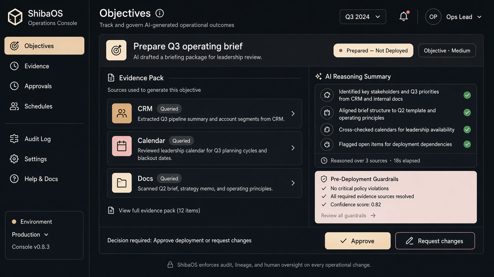
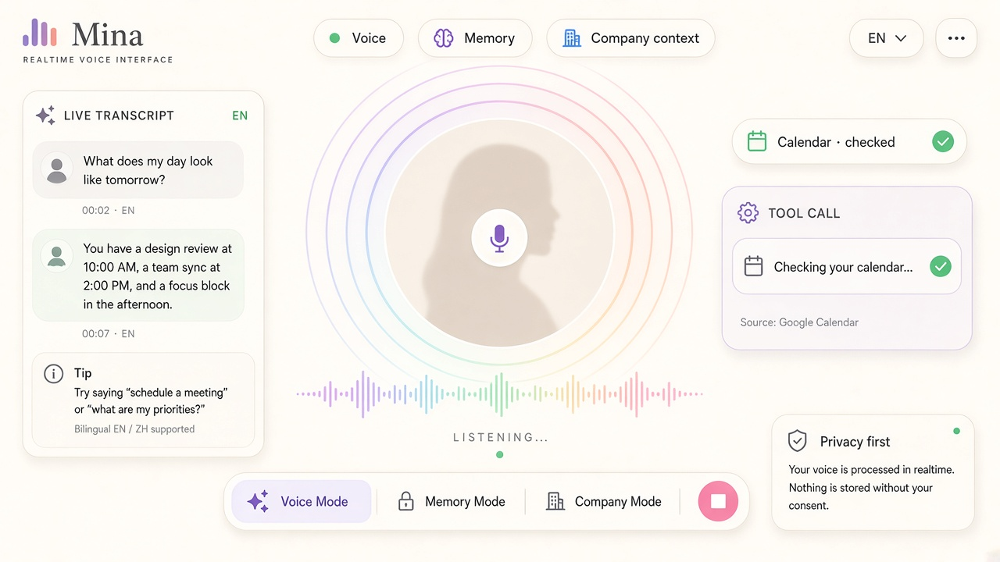
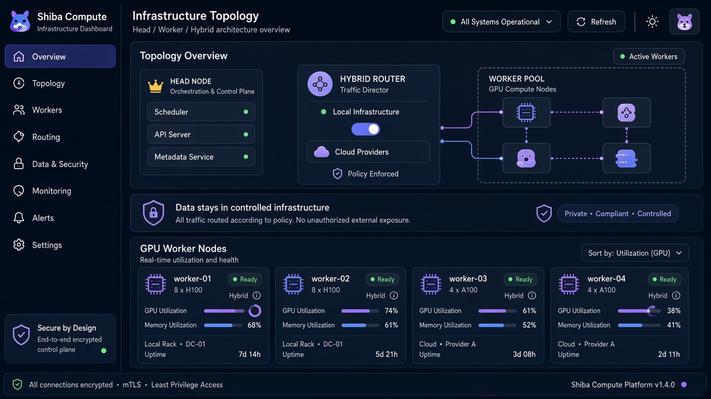
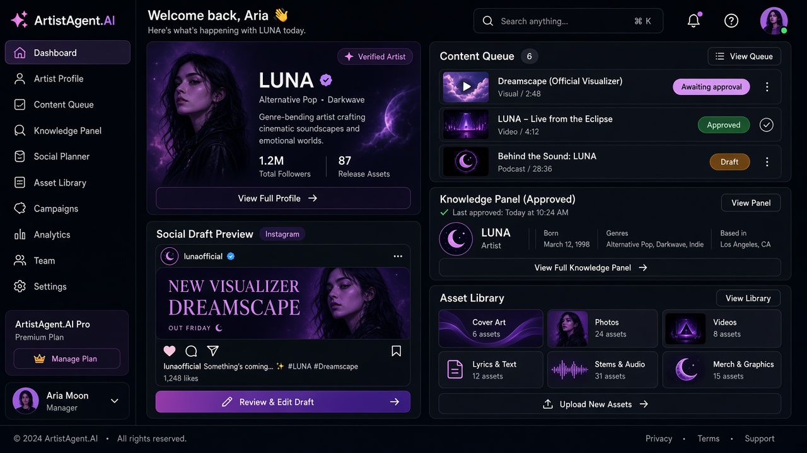

Agentic Systems
Agentic 系統
AI that can investigate, reason across company information, call tools, coordinate workflows, and act with human approval.
讓 AI 跨系統調查、推理、呼叫工具、協調流程，並在人工審批下執行工作。
What we build 我們建立甚麼
Clients aren't buying a website alone — they're buying a digital system that understands the business and can keep running: reasoning, memory, tools, integrations, and the product experience underneath.
客戶不是只買一個網站——他們買的是一套更懂業務、可以持續營運的數碼系統：介面之下是推理、記憶、工具、整合與完整產品體驗。

AI that can investigate, reason across company information, call tools, coordinate workflows, and act with human approval.
讓 AI 跨系統調查、推理、呼叫工具、協調流程，並在人工審批下執行工作。
Real-time conversational interfaces combining voice, memory, personality, company knowledge, and tool execution.
結合即時語音、記憶、角色、公司知識與工具執行的自然對話介面。
Local models, RAG, GPU workers, and controlled infrastructure for organizations that need privacy and ownership.
本地模型、RAG、GPU workers 與受控基建，適合重視私隱、控制權與資料主權的企業。
Complete SaaS and internal products: frontend, backend, database, auth, payments, integrations, deployment, and AI infrastructure.
完整 SaaS 與內部產品：前端、後端、資料庫、登入、支付、整合、部署與 AI 基建。
Who we serve 服務對象
We scope intelligent brand sites and multilingual digital reps for teams that care about approved knowledge, human handoff, and bilingual delivery — not open-ended improvisation.
我們為重視核准知識庫、真人交接與雙語交付的團隊，定範圍智能品牌網站與多語數位代表——不是開放式即興回覆。
Demo worlds (Lumina, Veritas, Aurora, Velocity, Luna, Nexora) are fictional illustrations — not real client case studies. 示範世界（Lumina、Veritas、Aurora、Velocity、Luna、Nexora）為虛構示意——並非真實客戶案例。
Technology proof 技術實證
These are not stock AI diagrams. They are product patterns from systems we are actively building and dogfooding inside Shiba.
這些不是通用 AI 概念圖，而是我們正在 Shiba 內部實際建立及 dogfood 的產品架構與工作模式。
SHIBAOS CORE

Real product UI from our dogfood runtime. No client data shown. Explore the broader final-product vision on the dedicated ShibaOS page.
來自內部 dogfood runtime 的真實產品介面，不含客戶資料。可到 ShibaOS 專頁查看完整最終產品願景。
MINA

English real-time voice runtime is under active acceptance and dogfood testing.
英文即時語音 runtime 正在進行 acceptance 與 dogfood 測試。
SHIBA COMPUTE

Designed around explicit Head, Worker, and Hybrid roles with bounded assignment and verification.
以明確的 Head、Worker、Hybrid 角色設計，並採用受控任務分配及驗證。
ARTISTAGENT.AI

Product direction from our internal artist-management and social workflow stack; client builds are scoped separately after Discovery.
畫面展示內部藝人管理及社交工作流程的產品方向；客戶版本於 Discovery 後另行定範圍。
Applied product examples 應用產品示範
Demo / 示範 Not real client case studies — fictional worlds for direction. 非真實客戶案例——僅作方向展示的虛構世界。
These fictional examples show how one underlying architecture can become a clinic assistant, legal intake layer, property concierge, automotive platform, creator system, or investor portal. Every client build is custom.
點選示範世界，展開寫實模擬畫面，並觀看腳本化 AI 禮賓回覆。每個真實項目均客製設計。

Healthcare · 私人診所
Private clinic · multilingual site + Lumina AI Concierge
私人診所 · 多語言網站 + Lumina AI Concierge
Live concept demos 互動概念示範
Interactive concept demo / 互動概念示範 Fictional data only. Nothing deploys, books, or files a real matter. 僅使用虛構資料。不會真實部署、預約或立案。
Launch into full fictional demo worlds, or try the inline patterns below: Objective Lab, clinic concierge, and professional intake.
可進入完整虛構示範世界，或試用下方內嵌模式：Objective Lab、診所禮賓、專業 Intake。
SHIBAOS
Type an operational ask. Watch a fictional objective move through evidence → reasoning → prepared (not deployed).
輸入營運指示，觀看虛構 Objective 經 Evidence → Reasoning → Prepared（未部署）。
LUMINA-STYLE
Pick a canned intent. Scripted replies with typing — escalate to Discovery when you ask for a human.
選擇預設意圖，觀看腳本回覆；要求轉接真人時導向 Discovery。
VERITAS-STYLE
Client-side validation only. Submit prepares a fictional brief and offers Discovery mailto — no network POST.
僅前端驗證。提交後顯示虛構 brief，並提供 Discovery 電郵——不會發送網路請求。
Built by Shiba Shiba 自研
Shiba Dev is not a consultancy learning AI on client time. Our engineering stack comes from building and operating our own AI-native products.
Shiba Dev 不是用客戶項目來學 AI 的顧問公司。我們的工程能力來自長期建立及營運自己的 AI-native 產品。
A company intelligence layer for agents, memory, tools, approvals, workflows, and business-system access.
整合 agents、記憶、工具、審批、工作流程與企業系統存取的公司智能層。
A live conversational interface combining voice, animated presence, memory, company context, and tool use.
將即時語音、動畫形象、記憶、公司語境與工具使用整合成自然對話介面。
A product layer for artist management, content workflows, social publishing, creative generation, and operational knowledge.
涵蓋藝人管理、內容流程、社交發布、創作生成與營運知識的 AI-native 平台。
Local models and GPU workers designed to route workloads between owned hardware and cloud models when needed.
以本地模型與 GPU workers 在自有硬件及雲端模型之間調度工作負載。
Systems underneath 介面之下的系統
The value sits underneath: reasoning, memory, permissions, tools, company systems, and infrastructure working together.
真正的價值在介面之下：推理、記憶、權限、工具、企業系統與 AI 基建共同運作。
Engagement 合作方式
Discovery → scoped proposal → build → ops Discovery → 範圍提案 → 建置 → 營運
We start by clarifying the problem, constraints, and fit — then we write a scoped proposal. Commercial terms are confirmed only after Discovery. No public starting prices.
先釐清問題、限制與適配度，再撰寫範圍提案。 商業條款僅於 Discovery 後確認——公開網站不會先報具體金額。
Agentic, enterprise, private-AI, and ongoing-operations work is scoped after Discovery. Third-party AI/API usage is quoted transparently when it applies.
Agentic、企業、私有 AI 與持續營運項目於 Discovery 後定範圍。 第三方 AI／API 用量於適用時透明列明。
Clarify the business problem, constraints, and fit — then we scope properly. We don't commit price, features, timeline, or compliance outcomes on the call itself.
先釐清業務問題、限制條件與適配度——再正式定範圍。 不當場承諾價格、功能、時程或合規結果。
Reply from hello@shiba-dev.com · usually within one business day.
由 hello@shiba-dev.com 回覆 · 通常一個工作天內。
For clinics & professional services 診所與專業服務
WhatsApp, hotline, and FAQ first response on an approved knowledge base, with clear human handoff. These systems support intake and operations only — never clinical freelancing or medical advice.
以核准知識庫支援 WhatsApp、熱線與 FAQ 首輪回覆，並清楚轉接真人。 僅覆蓋接待與營運——從不提供臨床建議或醫療自由接案。
Answers stay grounded on materials you approve — hours, location, booking flow, policy FAQs.
回覆受限於你核准的內容——營業時間、地點、預約流程與政策 FAQ。
When the request needs a person, the path escalates — Discovery or your staff, not inventing advice.
需要真人處理時立即升級——轉 Discovery 或你的團隊，不會捏造建議。
No diagnosis, treatment plans, or clinical freelancing. Scope stays intake and operations.
不做診斷、治療方案或臨床自由接案。範圍只限接待與營運。
Operational intelligent systems under contract: intelligent brand sites, multilingual digital representatives grounded on an approved knowledge base, and product work on the ArtistAgent.AI / ShibaOS stack. We are the contract development arm of The Shiba Inu Media Company Inc. (Vancouver / Hong Kong).
以合約交付營運級智能系統：智能品牌網站、基於核准知識庫的多語數位代表，以及 ArtistAgent.AI / ShibaOS 相關產品。我們是 The Shiba Inu Media Company Inc.（溫哥華／香港）的合約開發部門。
No. We don't sell packaged AI tools, and we don't publish prices on this site. Commercial terms are confirmed only after a Discovery Call.
沒有。我們不販售包裝式 AI 工具，網站亦不公開價格。商業條款僅於 Discovery Call 後確認。
No. Lumina, Veritas, Aurora, Velocity, Luna, Nexora and related stage examples are fictional illustrations of architecture patterns — not real client deployments.
不是。Lumina、Veritas、Aurora、Velocity、Luna、Nexora 及相關舞台示範皆為虛構架構示意——並非真實客戶部署。
Intake and operations support only: WhatsApp, hotline, and FAQ first response on an approved knowledge base, with clear human handoff. We never provide clinical advice or medical freelancing through these systems.
只做接待與營運支援：以核准知識庫處理 WhatsApp、熱線與 FAQ 首輪回覆，並清楚轉接真人。從不透過這些系統提供臨床建議或醫療自由接案。
A 30-minute Discovery Call maps the business problem, constraints, and where an intelligent system creates leverage. Scope, proposal, build, and ops follow Discovery — we don't commit price, features, timeline, or compliance outcomes on the call itself.
30 分鐘 Discovery Call 釐清業務問題、限制條件，以及智能系統可創造槓桿之處。範圍、提案、建置與營運在 Discovery 之後進行——通話當下不會承諾價格、功能、時程或合規結果。
Email hello@shiba-dev.com to arrange a 30-minute Discovery Call, or visit https://shiba-dev.com/.
電郵 hello@shiba-dev.com 預約 30 分鐘 Discovery Call，或造訪 https://shiba-dev.com/。
Scripted demo — not an AI API. Real assistant later via ShibaOS / our compute. hello@shiba-dev.com
腳本示範 — 非外部 AI API。正式助理待 ShibaOS／自有算力。hello@shiba-dev.com